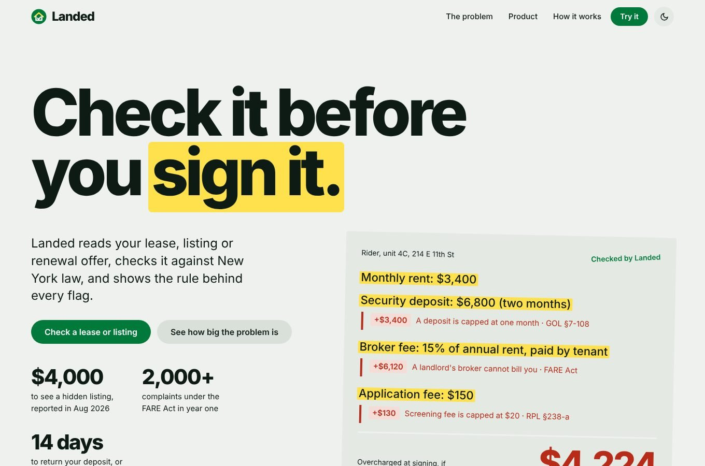
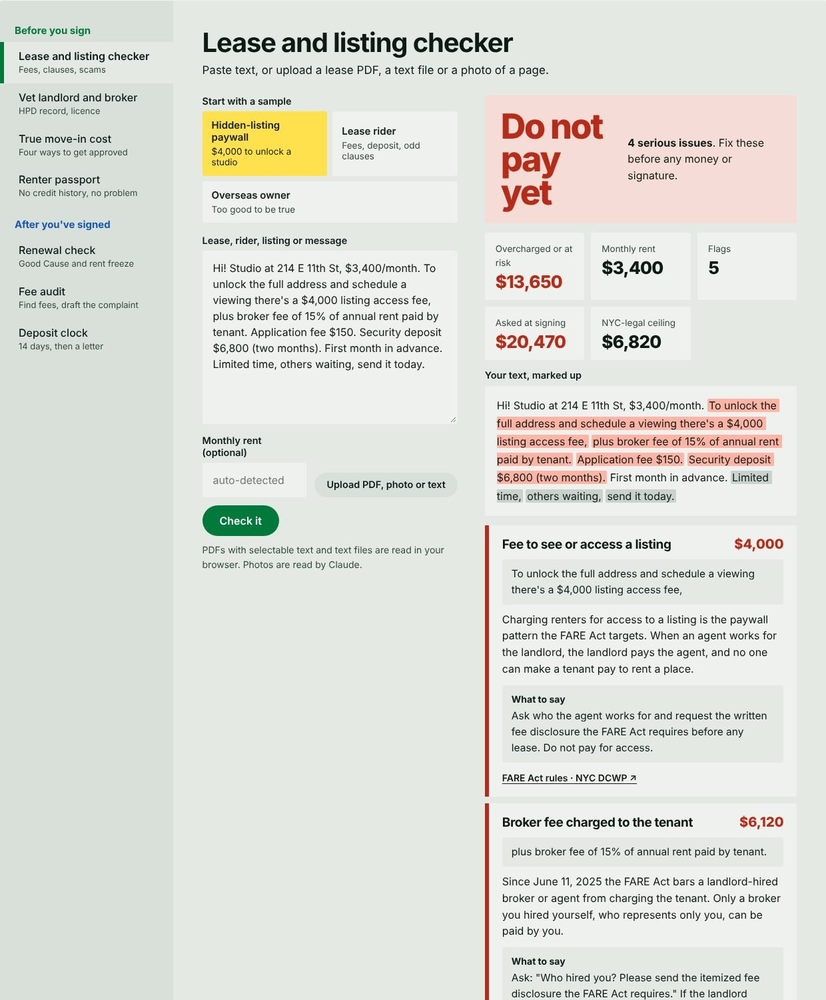
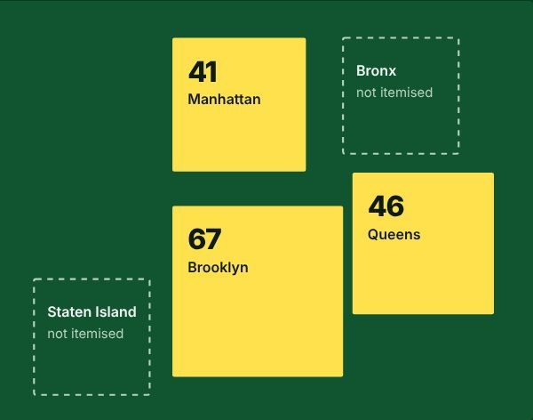
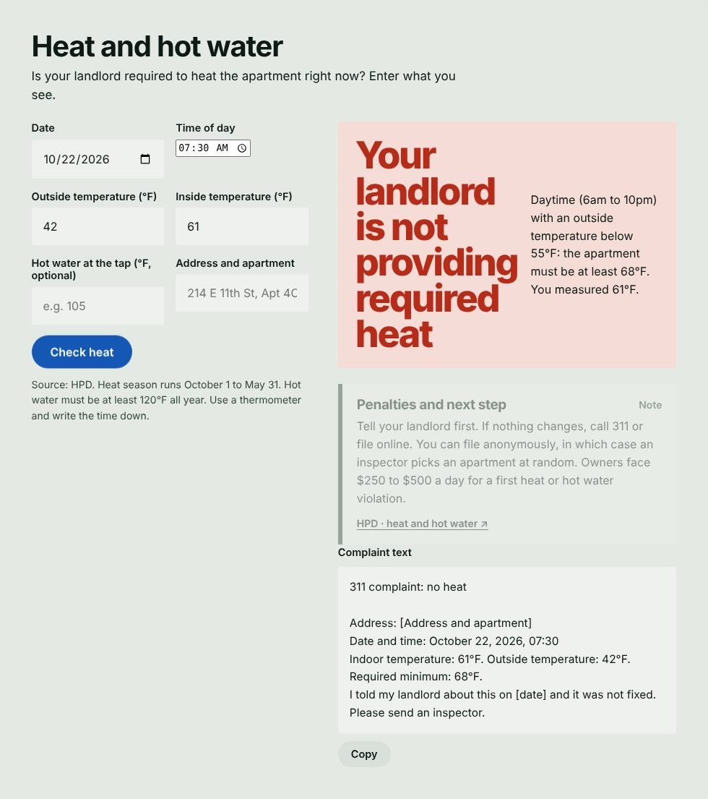

Protects NYC renters from the first message to the last month. Rules decide. AI only explains and drafts.
jeet-totla.github.io/landed-nyc github.com/jeet-totla/landed-nyc (open source) Jeet Totla · TETR College of Business NYC Founders Challenge
The problem
In June 2025 the FARE Act made landlords pay their own brokers. A year later renters still pay fees nobody can explain, and the people who enforce the law are badly outnumbered. A renter with a lease in hand cannot tell a legal fee from an illegal one.
$4,000charged to see a hidden listing (Bloomberg Law, Aug 2026)
74summonses against 2,000+ complaints, about $27K in penalties (The Real Deal, Jun 2026)
$5,395Manhattan median rent, 1.54% vacancy (6sqft, Sep 2026)
Newcomers have it worst: 137,799 international students in New York State rent with no US credit history (IIE Open Doors 2025). Every number on the site links to its source.
The solution
Landed reads a lease, listing or renewal offer, checks it against New York law, and cites the rule behind every flag. It covers two moments, with ten tools:
Before you sign
Lease and listing checker
Landlord and broker vetting (live HPD and DOS data)
True move-in cost with no credit
Renter passport
Is it rent-stabilized?
Move-in condition log
After you've signed
Renewal check (Good Cause, rent freeze)
Fee audit and complaint draft
Heat and hot water, 311 draft
Deposit clock and demand letter
It answers with numbers: the sample lease on the home page carries $9,650 in overcharges. Replies can be rewritten in the renter's own language.
How I built it, in one day
Picked the problem from reporting, not guesses: press and 311 data on the FARE Act year.
Verified the law first. Statutes, DCWP, HPD and HCR pages are in a dated rule table (docs/RULES.md). Anything I could not re-read is marked "not re-read", and heuristics are labelled as not law.
Rules engine in plain JavaScript, with tests (npm test). Fixed rules make every flag auditable.
Live data: HPD violations, complaints and litigation, and state broker licences, with dataset fields checked against real records.
Design and QA: reviewed against Taste and Awwwards rules, tested on desktop and a phone-size screen, with no horizontal scroll.
Shipped open source on GitHub with a sourced README.
AI toolkit and what I contributed
Claude (Sonnet 5.5)
Research, rules engine, site code, tests and copy, working from my direction.
Claude inside the product
Rewrites replies in other languages and reads photos of leases. It never decides what is illegal.
Taste and Awwwards skills
Design review rules applied to the page.
Playwright
Automated browser tests and screenshots.
NYC Open Data, data.ny.gov
Live landlord and broker records.
My part: I set the direction and made the product calls: the two-moment structure, the rule "rules decide, AI explains", and open source on GitHub. I required every statistic and statute to be checked against its source, questioned and removed an unsupported licence claim, asked for the live HPD and licence lookups, directed the design and mobile polish, and chose the added tools: complaint map, heat helper, stabilization screener and move-in log.
Try it, or see it
Live: jeet-totla.github.io/landed-nyc. If the link fails, these are screenshots of the build.

Home: a lease rider with fees highlighted and the overcharge totalled

Checker flags a $4,000 listing fee, broker fee and 2-month deposit

311 broker-fee complaints by borough

Heat helper and 311 draft
Landed is information, not legal advice. It judges only the text you give it. Live landlord and broker lookups need the GitHub Pages site, not an embedded view. Heuristics such as 40x rent income and guarantor multiples are labelled as not law. Complaint counts are from press reports of 311 data. Law sources: GOL §7-108, RPL §§226-c, 234, 235-b, 238-a, Art. 6-A; NYC DCWP FARE Act FAQ; HPD; HCR.